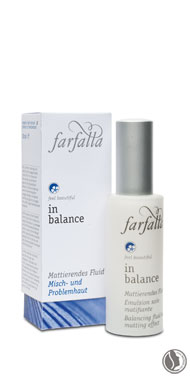
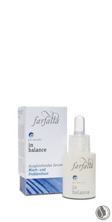
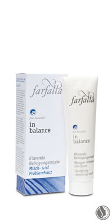

in balance
for skin impurities at any age
1. Noticeably cleanses and refreshes the skin.
2. Natural sebaceous secretion regulation.
3. Refines skin and gives your complexion a
visibly matte finish. |

|
Innovative active ingredients
Linseed extract
A fantastic plant substance that controls oily and/or blemished skin, leaving a
refreshingly clean and clear appearance. Test results showed a positive reduction
in sebum production, as well as the alleviation of minor skin damage.
Hamamelis water
This organic herbal toner, with its pore-refining and slightly anti-inflammatory
effect, helps to clear blemished skin.
Aloe vera
The organic fresh plant extract, isolated from the Aloe vera leaf, supports cell
regeneration, thanks to its rich abundance of minerals, enzymes, trace elements
and vitamins. Aloe vera refills the skin’s moisture depots and, as a result, the skin
is firmed and wrinkles softened.
Natural scents
According to aromatherapeutic principles, a mixture of essential oils isolated from
organic-quality cistus, manuka, rosemary and sage, works specifically against skin
impurities. With its deep-penetrating effect, the skin is sustainably cleansed and
balanced sebum production supported.
|  |
 |
 |
Balancing fluid
with matting effect
Clarifies, smoothes and calms your skin
and gives your complexion a balanced,
matte finish. Linseed extracts control
the overproduction of sebum. Rosemary,
rock rose and manuka counteract
impurities. Following cleansing/tonic
in the morning and evening, apply
Balancing serum, if desired.
100% from natural origin – 74% of the
certifiable natural substances are organic |
Balancing serum
Clarifies, smoothes and calms skin
intensively. Extracts of linseed clearly reduce
sebum production. Rosemary, rock
rose and manuka counteract outbreaks
and blemishes. After cleansing skin, apply
2 to 3 times per week or daily in case
of severe skin impurities. Then apply
Balancing fluid with matting effect.
100% from natural origin – 95% of the
certifiable natural substances are organic |
Clarifying cleansing mask
Cleanses, refines and refreshes thanks
to its grapefruit, citron and rosemary
ingredients. Gently removes dry flakes
from skin. An ideal preparation which
allows skin to absorb the combination
of active ingredients in subsequent
skin care. Apply once or twice a week,
leaving mask on face for 10-15 minutes
before rinsing off with plenty of water.
Complete this care regimen by using
Balancing fluid with matting effect.
100% from natural origin – 98% of the
certifiable natural substances are organic |
|